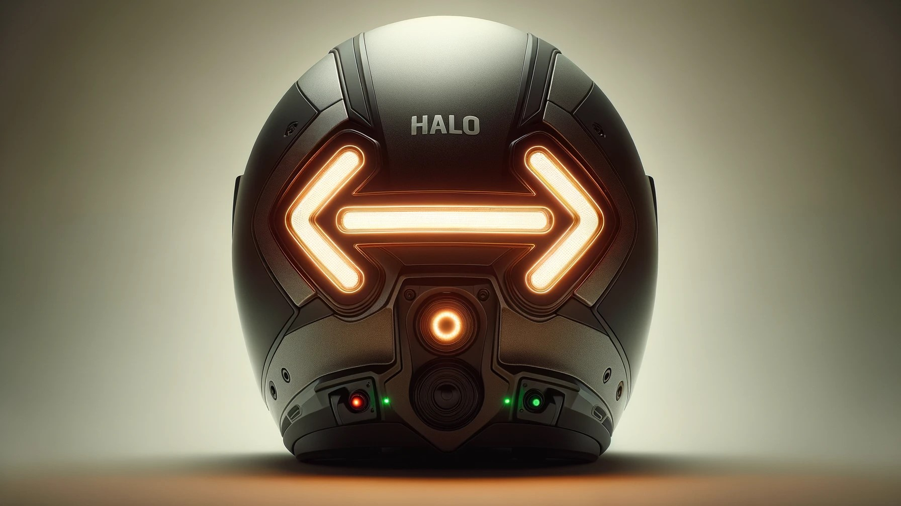

Introducing Halo Helmet
Halo Helmet was designed for the sole purpose of keeping motorcycle riders safer. Motorcycles and Riders are a small portion of drivers on the road but this group holds the highest motor vehichle fatality rate across the nation. Some precautions can be taken like safe riding habits, protective clothing, and wearing a helmet. However, the main issue is motorcycles are sometimes hard to spot on the road until its to late.
This is where Halo Helmet comes in. We want riders to enjoy riding their motrocycle with the satisfaction of knowing other riders will notice them. We aim to do this with embedded sensors and an LED matrix display. Halo Helmet attatched directly to your already existing helmet and detects motor vehichles around you. When a vehichle is detected both the rider and the other vehicles are allerted acting as blind spot detection. Also with the display already mounted on the back of the helmet the Halo Helmet can link to your tail lights to add another layer of visibility when stopping or turning.
